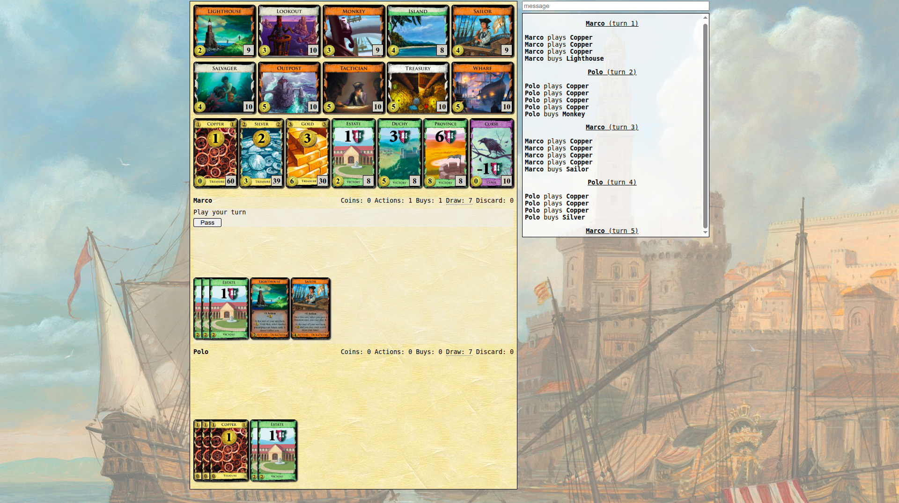

UE1 Réaliser un développement d'application
Projet : Dominion Seaside
Contexte :
Dans le cadre d’un projet de développement d'application en JAVA et JAVAFX, nous
avons conçu un jeu basé sur le Dominion, extension Seaside. L’objectif était, en
deux parties, d'implémenter la logique du jeu avec une interface préfaite. Dans un
second temps, il fallait créer une interface en prenant la partie logique en "blackbox".
Objectif :
L'objectif principal était de rendre utilisable et de designer une interface à
partir d'un code déjà présent. Contrairement à d'autres projets que j'ai pu réaliser
précédemment, je me suis concentré sur la qualité du code, la validation de nombreux
tests ainsi que sur le respect strict des consignes. L'application devait de cette
manière être robuste et testable tout en conservant une cohérence dans la gestion des évènements.
Bilan & Compétences :
Ce projet m'a permis de développer mes compétences dans l'élaboration d'une
application à travers les diverses phases de test ayant suivi l'implémentations de
conceptions simples à travers des cartes aux effets différents. Ainsi, j'ai eu a
respecter les besoins décrits par les règles d'un jeu faisant évoluer l'application
tout au long de ce projet.
